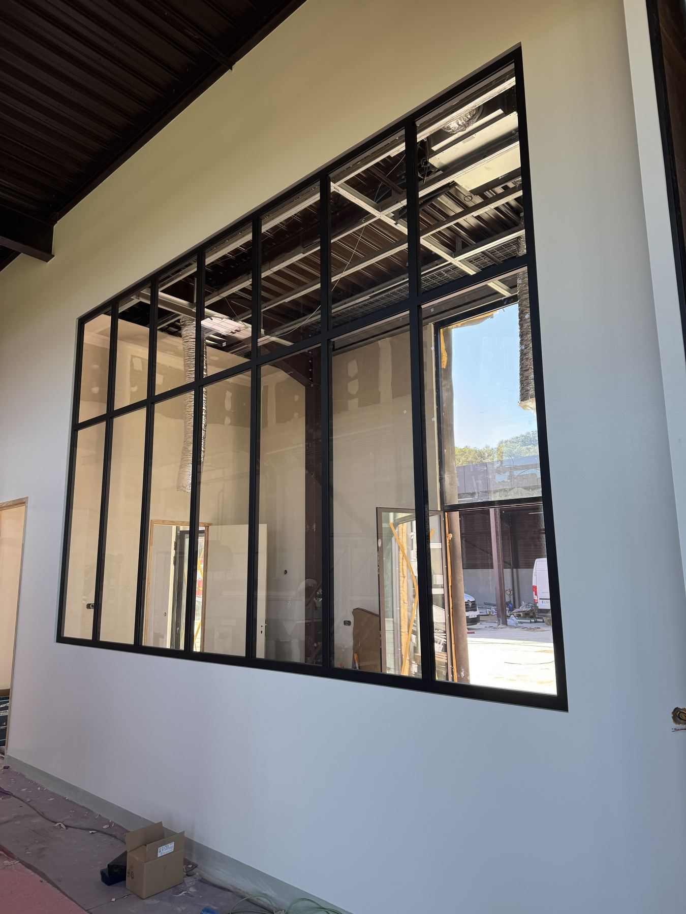
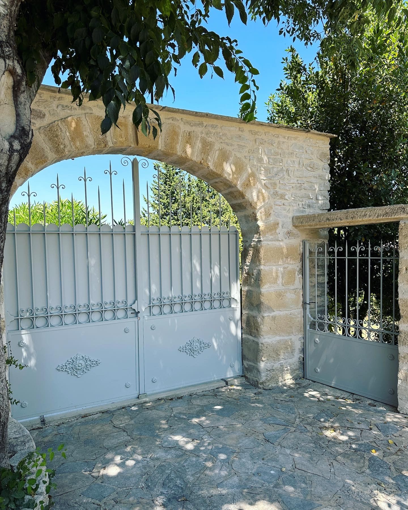

Depuis plus de 10 ans · Sernhac, Gard
L'acier au service de l'architecture
FMG Metal Studio conçoit et fabrique des ouvrages métalliques haut de gamme — garde-corps, escaliers, verrières et menuiseries acier — pensés comme des pièces d'architecture, pas de simples éléments de ferronnerie.
Notre approche
Plus qu'un métallier, un atelier d'architecture métallique
Nous travaillons aux côtés d'architectes, de décorateurs et de particuliers exigeants pour donner forme à des ouvrages sur mesure — de l'étude technique jusqu'à la pose. Précision du dessin, qualité des matériaux et finitions soignées : chaque pièce est pensée pour durer et pour sublimer l'espace qu'elle habite.
Savoir-faire
Nos domaines d'intervention
01
Garde-corps & rambardes
Intérieur, extérieur, sur mesure — acier, inox ou laiton, avec ou sans verre.
02
Portails & clôtures
Portails battants ou coulissants, clôtures dessinées pour s'intégrer au bâti.
03
Escaliers métalliques
Droits, quart tournant ou hélicoïdaux — structures sur mesure, habillage libre.
04
Verrières & menuiserie acier
Verrières d'atelier, marquises, charpentes métalliques et menuiserie acier.
Marque déposée
Pleine Lumière®
Notre collection de menuiserie acier : fenêtres, portes et verrières à la française, inspirées des ateliers du XIXe siècle et pensées pour la lumière. Un savoir-faire que nous avons développé et déposé, à la croisée de la métallerie et de la menuiserie.
Découvrir la collection
Portfolio
Réalisations récentes
Verrière de toit

Portail sur mesure
Un projet sur mesure ?
Particuliers, architectes, professionnels : nous étudions votre projet, du Gard à l'ensemble de la France.
Nous contacter